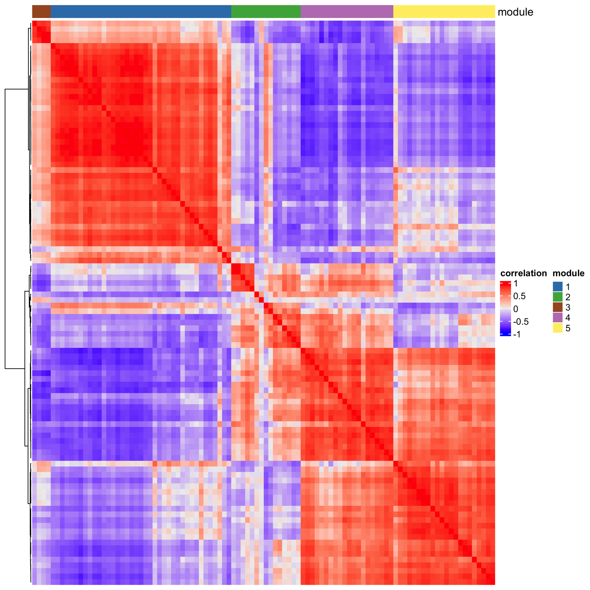
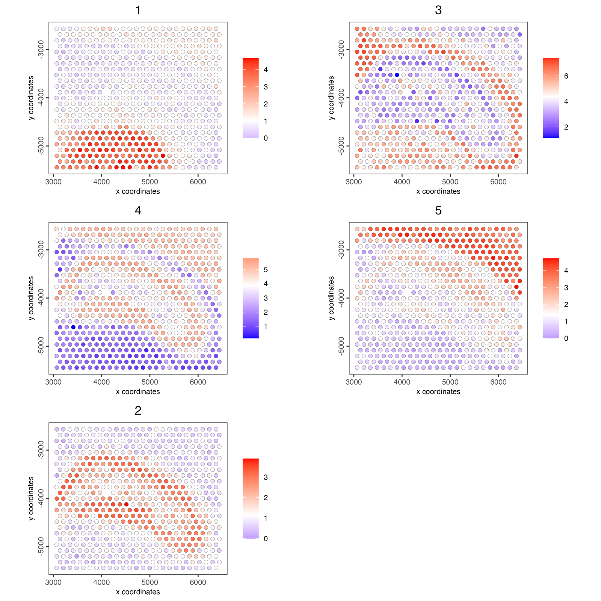

Detection of spatial co-expression modules
Source:vignettes/spatial_coexpression_modules.Rmd
spatial_coexpression_modules.RmdSpatially variable genes often share a pattern: genes of one cell
type or tissue region rise and fall together across the section. A
spatial co-expression module is such a group.
spatialCoexpression() finds them in one step:
- each cell’s expression is averaged with its neighbours’ in a spatial network, which keeps the spatial pattern and smooths out cell-to-cell noise;
- the genes are correlated on the smoothed values;
- the correlation is clustered into modules;
- each module gets one score per cell, the mean expression of its genes.
The same command runs on disk-backed (GiottoDisk) objects; see Detection of spatially variable genes.
1 Setup and load example dataset
# Ensure Giotto Suite is installed
if (!"Giotto" %in% installed.packages()) {
pak::pkg_install("giotto-suite/Giotto")
}
# Ensure Giotto Data is installed
if (!"GiottoData" %in% installed.packages()) {
pak::pkg_install("giotto-suite/GiottoData")
}
library(Giotto)
g <- GiottoData::loadGiottoMini("visium")2 Select spatially variable genes
Modules are built from genes that are spatial to begin with. Rank the genes with binSpect’s join-count test and keep the top 100 (see Detection of spatially variable genes for the methods):
ranktest <- spatialAutoCor(g,
method = "binspect",
spatial_network_name = "spatial_network",
return_gobject = FALSE
)
spatial_genes <- ranktest$feats[1:100]3 Find the modules
g <- spatialCoexpression(g,
feats = spatial_genes,
spatial_network_name = "spatial_network",
n_modules = 5
)Each gene’s module is now in the feature metadata, with
spatial_module_cor, its mean correlation with the rest of
its module (how firmly it belongs):
modules <- fDataDT(g)[!is.na(spatial_module),
.(feat_ID, spatial_module, spatial_module_cor)]
head(modules[order(spatial_module, -spatial_module_cor)], 8)## feat_ID spatial_module spatial_module_cor
## <char> <int> <num>
## 1: Shox2 1 0.8094911
## 2: Rgs16 1 0.8081125
## 3: Lef1 1 0.8029107
## 4: Synpo2 1 0.7969906
## 5: Slc17a6 1 0.7967425
## 6: Ntng1 1 0.7924487
## 7: Grm4 1 0.7892326
## 8: Amotl1 1 0.7878026smoothing sets how much a cell’s neighbours count (by
default about as much as the cell itself), and
smoothing = 0 correlates the unsmoothed values.
4 Inspect the modules
With return_gobject = FALSE the command returns the
correlation matrix, the modules and a summary per module instead:
coexpr <- spatialCoexpression(g,
feats = spatial_genes,
spatial_network_name = "spatial_network",
n_modules = 5,
return_gobject = FALSE
)
coexpr$summary## module size within_cor between_cor score
## <int> <int> <num> <num> <num>
## 1: 1 39 0.7149600 -0.31448533 0.7149600
## 2: 3 4 0.8421133 -0.12399741 0.6817009
## 3: 4 20 0.7310168 -0.08401100 0.5625362
## 4: 5 22 0.7196101 -0.05392370 0.5321073
## 5: 2 15 0.3621740 -0.09061745 0.2810949within_cor is the mean correlation between a module’s
genes and between_cor their mean correlation with the other
modules; score ranks the coherent, distinct modules
first.
heatmapCoexpression(g, coexpr)
5 Module scores in the tissue
The module scores are stored as the spatial enrichment
spatial_module:
spatCellPlot(g,
spat_enr_names = "spatial_module",
cell_annotation_values = as.character(coexpr$summary$module),
point_size = 2,
cow_n_col = 2
)
6 Top genes per module
For downstream analyses such as spatially informed clusters or spatial domains with HMRF, take the genes that belong most firmly to each module. In a full-size dataset, about 30 genes per module is a common choice.
7 Session Info
## R version 4.5.3 (2026-03-11)
## Platform: aarch64-apple-darwin20
## Running under: macOS Tahoe 26.6.2
##
## Matrix products: default
## BLAS: /Library/Frameworks/R.framework/Versions/4.5-arm64/Resources/lib/libRblas.0.dylib
## LAPACK: /Library/Frameworks/R.framework/Versions/4.5-arm64/Resources/lib/libRlapack.dylib; LAPACK version 3.12.1
##
## locale:
## [1] C.UTF-8/C.UTF-8/C.UTF-8/C/C.UTF-8/C.UTF-8
##
## time zone: America/New_York
## tzcode source: internal
##
## attached base packages:
## [1] stats graphics grDevices utils datasets methods base
##
## other attached packages:
## [1] Giotto_4.3.4 GiottoClass_0.7.16
##
## loaded via a namespace (and not attached):
## [1] colorRamp2_0.1.0 gridExtra_2.3 rlang_1.3.0
## [4] magrittr_2.0.4 clue_0.3-68 GetoptLong_1.1.1
## [7] GiottoUtils_0.2.8 matrixStats_1.5.0 compiler_4.5.3
## [10] systemfonts_1.3.2 png_0.1-9 vctrs_0.7.2
## [13] shape_1.4.6.1 crayon_1.5.3 pkgconfig_2.0.3
## [16] SpatialExperiment_1.20.0 fastmap_1.2.0 backports_1.5.0
## [19] magick_2.9.1 XVector_0.50.0 labeling_0.4.3
## [22] ggraph_2.2.2 ragg_1.5.2 purrr_1.2.1
## [25] bluster_1.20.0 cachem_1.1.0 beachmat_2.26.0
## [28] jsonlite_2.0.0 DelayedArray_0.36.0 BiocParallel_1.44.0
## [31] tweenr_2.0.3 terra_1.9-11 irlba_2.3.7
## [34] parallel_4.5.3 cluster_2.1.8.2 R6_2.6.1
## [37] RColorBrewer_1.1-3 GenomicRanges_1.62.1 scattermore_1.2
## [40] Rcpp_1.1.1 Seqinfo_1.0.0 SummarizedExperiment_1.40.0
## [43] iterators_1.0.14 IRanges_2.44.0 Matrix_1.7-5
## [46] igraph_2.2.2 tidyselect_1.2.1 dichromat_2.0-0.1
## [49] abind_1.4-8 viridis_0.6.5 doParallel_1.0.17
## [52] codetools_0.2-20 lattice_0.22-9 tibble_3.3.1
## [55] Biobase_2.70.0 withr_3.0.2 S7_0.2.1
## [58] polyclip_1.10-7 circlize_0.4.18 pillar_1.11.1
## [61] MatrixGenerics_1.22.0 checkmate_2.3.4 foreach_1.5.2
## [64] stats4_4.5.3 plotly_4.12.0 generics_0.1.4
## [67] GiottoDisk_0.0.0.5 S4Vectors_0.48.0 ggplot2_4.0.2
## [70] scales_1.4.0 GiottoData_0.3.8 gtools_3.9.5
## [73] glue_1.8.0 lazyeval_0.2.2 tools_4.5.3
## [76] GiottoVisuals_0.2.16 tilework_1.0.0 BiocNeighbors_2.4.0
## [79] data.table_1.18.2.1 ScaledMatrix_1.18.0 graphlayouts_1.2.3
## [82] tidygraph_1.3.1 cowplot_1.2.0 grid_4.5.3
## [85] tidyr_1.3.2 colorspace_2.1-2 SingleCellExperiment_1.32.0
## [88] BiocSingular_1.26.1 ggforce_0.5.0 cli_3.6.5
## [91] rsvd_1.0.5 textshaping_1.0.5 S4Arrays_1.10.1
## [94] viridisLite_0.4.3 ComplexHeatmap_2.26.1 dplyr_1.2.0
## [97] gtable_0.3.6 digest_0.6.39 BiocGenerics_0.56.0
## [100] SparseArray_1.10.9 ggrepel_0.9.8 rjson_0.2.23
## [103] htmlwidgets_1.6.4 farver_2.1.2 memoise_2.0.1
## [106] htmltools_0.5.9 lifecycle_1.0.5 httr_1.4.8
## [109] GlobalOptions_0.1.4 MASS_7.3-65